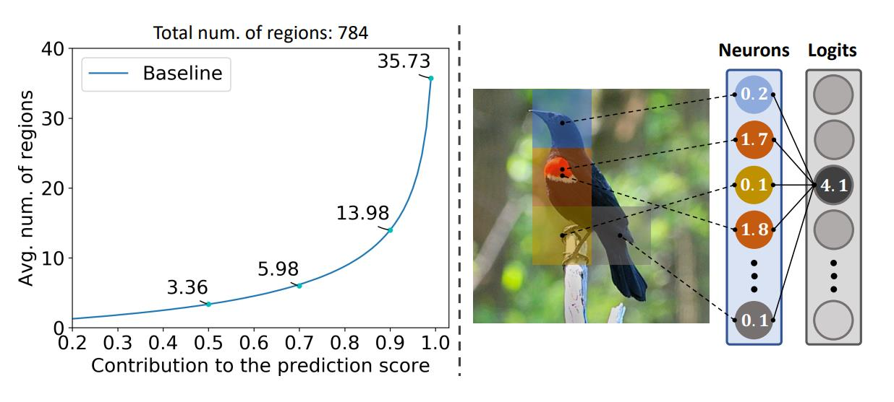
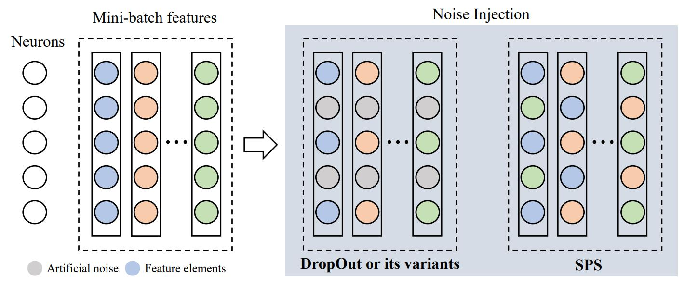
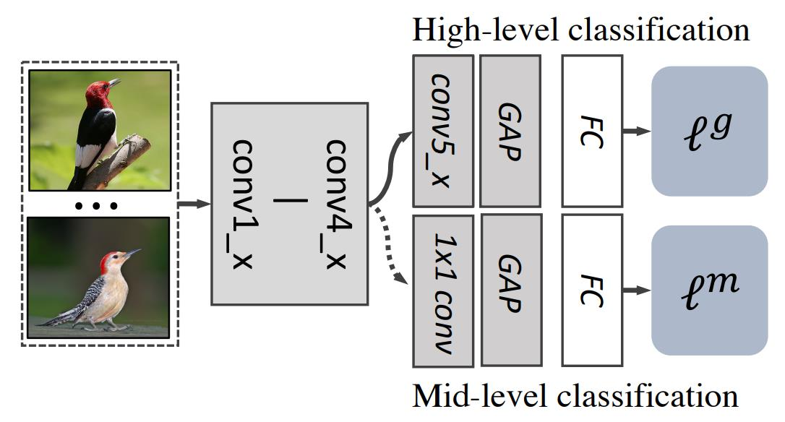
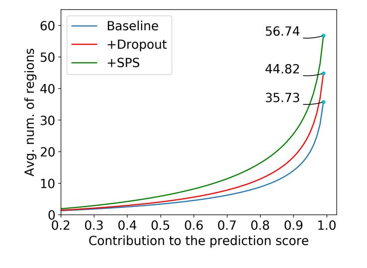
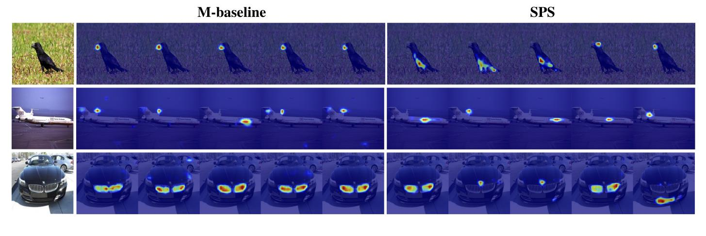
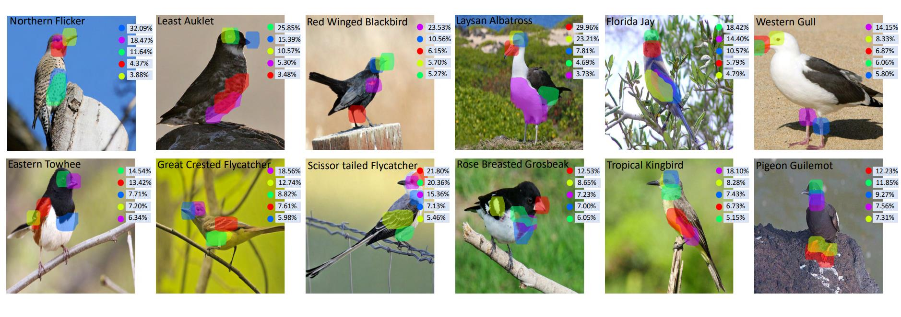
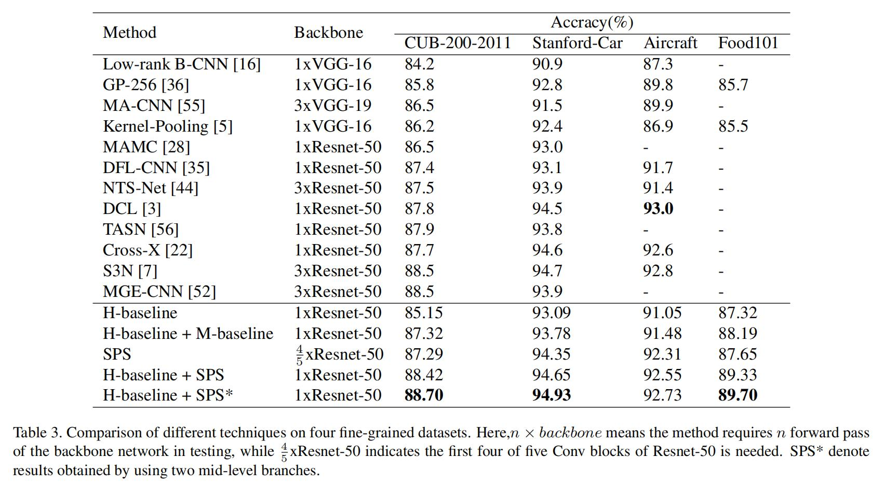

细粒度：SPS¶
综述¶
会议时间：IEEE International Conference on Computer Vision 2021 (ICCV, 2021)
源码地址(PyTorch版本)：https://github.com/Shaoli-Huang/SPS
针对领域：细粒度图像分类(FGVC)
主要思想¶
由于同一类别中不同子类的差异通常存在于对象的微小部分，因此细粒度分类要比一般的物体分类要困难。传统针对大类别分类的算法通常不能在细粒度分类中取得比较好的效果，因为他们大部分都只关注于学习高级特征表示，忽略了细微的变化。近几年的研究中，基于部件定位和基于采样的方法是解决细粒度任务比较流行的方法。前者主要是利用强监督检测(如人为标注检测框)或者利用弱监督学习的框架来定位物体的部件区域(part regions)，如：RA-CNN(论文笔记)、NTS-Net(论文笔记)；后者主要是利用注意力图来对输入图像做非均匀采样，从而丰富表征学习，如S3N(论文笔记)、TASN(论文)。虽然这两种方法都可以成功地提高识别性能，但是他们有的训练过程非常复杂，有的在测试过程中引入了大量的额外计算，限制了实际的应用。
最近的研究中发现，由于中级模型(mid-level model)独特的优点，将中级模型结合到细粒度识别中也可以获得很好的识别效果，如Cross-X(论文笔记)、MGE-CNN(论文)、DFL-CNN(论文)。首先，由于深度神经网络的层次结构，中级模型容易获得，并且开发灵活；其次，它们也可以很好地捕捉局部信息，并且为细粒度识别中的高级表示方法做重要补充。Cross-X文章中证明：耦合中级表示和高级表示确实会提高模型的分类性能。尽管中级表示在细粒度分类中表现出了良好的效果，但是之前的研究都是以即插即用(plug-and-play)的方式采用现成的中级模型来进行预测，而不是增强中级模型本身的性能。本文中，作者围绕“中级表示”(mid-level representations)展开研究，努力让模型学习更好的中级表示来进行细粒度识别。
作者观察到，中级模型主要基于图片中少量的图片区域来决定最终的标签。如下图左侧所示，对于在CUB数据集上训练的基线模型，中级特征图共有784个区域(以输入图像尺寸448为例)，平均前35.74个响应值最大的区域贡献了最终预测分数的99%，因此作者推测，这可能是由于一些稳定的物体部件(object parts)体现出了非常强大的可辨别性，因此神经网络更多的将权重偏向这几个模块。如下图右侧所示，红色和黄色是红翅黑鹂(Red-winged Blackbird)可辨识的部位模式，因此网络趋向于学习对这种模式响应更高的神经元，使其对最终的预测起到主导作用。因此，所学到的模型将会非常容易被有限的部件模式所主导，降低了模型的鲁棒性和泛化能力。

为了解决这一现象，作者提出了随机部分交换(Stochastic Partial Swap, SPS)策略去增强中级模型的泛化能力，该策略在训练过程中，随机选择一个样本特征作为噪声源并且将它的一些特征元素与另一个样本相应位置的特征元素做交换。如下图所示，与现有的注入噪声策略不同，作者提出的方法是利用样本特征作为噪声源，而注入噪声是随机在样本特征中注入其他的值，如DropOut是随机丢弃特征，即在原样本特征中注入零，用于降低过拟合风险。

作者提出的策略在学习中级特征表示方面有如下几个优势：
- 如果大部分换入的神经元都是不活跃的，则该方法就类似DropOut，可以鼓励更多的神经元进行特征表示；
- 帮助抑制某些主导预测的神经元。例如：如果一些在预测一个特定的类别中起主导作用的神经元被交换到另一个类别的一个样本特征中，它可能会导致该样本的错误预测，最后，损失函数会惩罚这些神经元误导性的影响；
- 增强模型分类器的鲁棒性。例如：交换类内的样本特征，会让分类器看到该类更多的特征组合模式；交换类间的样本特征，会让神经元产生一个包含另一类噪声模式的样本特征。同时也是模拟真实噪声数据以训练分类器的更好方法，因为以往的噪声注入方式都是注入人工噪声，而它将一个样本的真实激活值注入到另一个样本，更贴合实际情况。
方法¶
网络结构¶
细粒度识别的标准方法是在目标训练集上微调主干网络，模型通过在最后一层卷积层上应用全局平均池化来提取特征，从而捕捉目标的高级信息。但是如上文所述，在以往的研究中发现，细粒度分类任务里中级表示对高级表示具有补充效果。参考之前的中级模型研究(Cross-X、MGE-CNN、DFL-CNN)，作者总结了一个简单的学习框架作为基线，具体结构如下图所示。基线将一个中级分类分支插入到标准的分类网络中，新的分支模块由1×1的卷积层、ReLU激活函数层、全局最大池化层构成，在训练过程中，两个分支联合训练。

随机部分交换¶
虽然中级表示可以补充高级表示以提高精度，但单独使用时性能仍不能让人满意。如上文分析，也许是所学的中级模型往往被少数具有高度辨识力的模式(highly discriminative patterns)所支配，从而降低了模型的鲁棒性和泛化能力，这类似于过拟合现象，模型判断图像的类别过度依赖于某个神经元(也可以说是过度依赖物体的某个部位，如第一张图片中的红色区域)。解决这一问题最自然地就是想到在特征层中应用DropOut，但简单地在训练过程中将一些元素抹除并不会抑制某些“过度自信的”神经元(带有非常高的激活响应)。因此，虽然DropOut操作可以鼓励更多的神经元表示一个概念，但最终的特征表示仍可能会由某些高响应的神经元主导。为了纠正这一现象，作者提出了随机部分交换学习策略，他对不同样本之间执行元素交换，从而在训练过程中注入更加真实的噪声。
噪声注入：
SPS主要的思想就是将一个样本的特征注入到另一个样本中。对于小批量(mini-batch)中的每个样本，首先随机选择当前批量中的另一个样本作为噪声源，然后逐个元素地交换他们的部分特征。给一个样本x_i，并且在同一个批量中随机选择另外一个样本x_j，噪声注入的操作可以表示为：
训练损失：
如上所述，作者通过交换某些特征单元来注入噪声，有助于网络防止过度关注少量的判别模式(discriminative patterns)。另外，该策略还可以提供模拟噪声模式的样本，从而增强分类器对噪声的鲁棒性。为了放大这些特征，作者还多次应用噪声注入操作，从而在每个小批量中产生更多的扰动情况。因此，单个训练样本(x_i, y_i)的训练损失可以表示为：
注：噪声注入只是一种提高模型特征提取能力的策略，因此在测试过程中不需要注入噪声。
实验分析¶
量化图像区域对预测的贡献：
为了进一步观测学习中级特征表示带来的问题，作者统计了图像中主要使用多少区域来进行预测。首先指定一张标签为y的图像I，将输出的特征图表示为F\in \mathcal R^{d\times a\times b}，其中d和(a,b)分别表示输出的通道数和图片尺寸。F的每个空间定位索引i\in [1,a\times b]对应于图片中的一个区域R_i，一张图中共有a\times b个小区域。假设有中级特征f\in \mathbb R^d与他对应于标签y的分类器权重w\in \mathcal R^d，输出的类别预测值可以表示为o=w^t · max(F)，其中，max(·)表示全局最大池化操作。现在，可以计算区域R_i的贡献量：
其中，F^k和w^k分别对应于F中第k个通道的特征图和w中第k个位置的权重，argmax(F^k)=i表示F中第k张特征图上最大的响应点位于第i个区域。之后，按降序对区域的贡献量进行排序，最后再做一个累加，得到积累贡献，进一步确定至少有多少个区域可以贡献预测值的多少百分比，最后可以画出区域数量与贡献百分比的图。
如下图所示，作者将基线模型、添加了DropOut的模型和添加了SPS的模型做了对比。以最终预测值的99%为例，基线模型中，至少需要35.73个区域，而引入DropOut的模型至少需要44.82个区域，引入了SPS的模型则需要多达56.74个区域，进一步验证了SPS可以促进多个神经元进行特征表示，并且帮助抑制某些主导预测的神经元。

可视化分析¶
滤波器可视化：
为了直观地理解SPS的优越性，作者进一步可视化并且比较了基线模型和SPS的前五个滤波器，如下图所示。首先，可以观察到基线模型的前五个滤波器大部分都在相同的位置有响应，而引入了SPS之后，滤波器的响应分布于不同的区域。这表明作者提出的方法有效地减少了某些强模式的优势，并且鼓励更多的模式来表示输入。同时基线模式可能会被某些噪声模式所影响，如下图第二行，基线模型检测到一种尾部样式，而该样式是由另一架飞机的尾部意外组合而形成的噪声模式。

模型解释：
与利用全局视觉线索可视化来提供模型解释的全局平均池化不同，SPS基于全局最大池化，因此可以提供模型预测更详细的解释(细微部分的重要性)。另外，SPS还可以通过鼓励对更多部分区域的关注来增强模型的可解释性，从而得到更完整的表示。给定一张图片以及相应特征图的定位索引i，首先计算区域贡献C(R_i)，之后生成局部类别响应图LCAM(Local Class Activation Map)。最后，对区域贡献分数进行排序，并且显示前k个贡献分数和对应的区域，最后的结果如下图所示，下图显示了对模型预测最重要的几个区域：

精度对比¶

总结¶
作者通过统计，发现了中级模型存在一个问题，即只有少量的图像区域有助于最终的预测，因此提出了随机部分交换的方法来解决这一问题。主要思想就是将一张真实的特征作为噪声源去干扰另一个特征，并且证明了这种策略有效地促进了神经网络在预测过程中依靠更多的区域做判断，作者还展示了它在提高模型泛化能力和可解释性方面的优势。
注：以上内容仅是笔者的个人观点，若有错误，欢迎大家批评指正。
最后一次修改日期：2021年12月27日